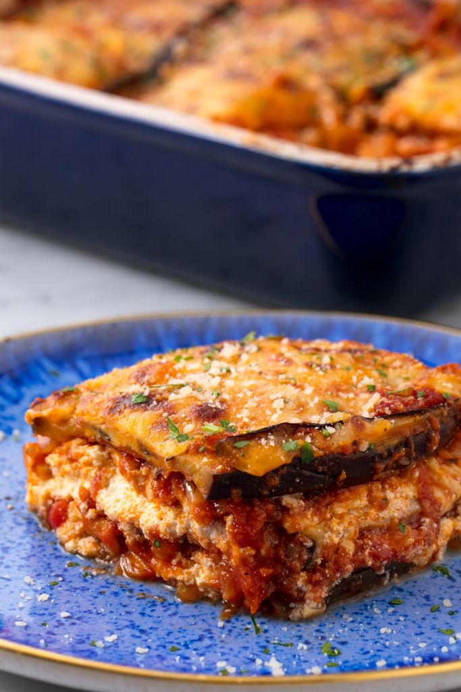

Eggplant lasagna

This Eggplant Lasagna is easy to make with simple ingredients, budget friendly and rich in flavor. Vegan and perfect family food.
Ingredients
- 1/2 Yellow Onion, diced
- 1 cup Carrot, finely diced
- 14 oz Crushed tomatoes
- ¼ cup Tomato Paste
- 1 cup Dry Green Lentils
- 2 cups Vegetable Broth
- ½ cup Parsley, chopped
- ¼ cup Basil, chopped
- Salt, to taste
- 3 large Eggplant, cut into ⅓” rounds
- 1 ½ cup Marinara Sauce of Choice
- Vegan Ricotta
Steps
- Preheat the oven to 375F while you prepare all
of the ingredients. Line 2-3 Baking Trays with parchment paper and fill
each tray with the Eggplant “coins”, so none are overlapping. Bake for
25 minutes, then remove from the oven.
- In the meantime, add the diced Onion to a
large pot with a splash of Water or Oil; sauté over Medium heat for 3-4
minutes, until translucent. Then, add the Carrot, Crushed Tomatoes,
and Tomato Paste to the pot, stirring well. Once everything is well
incorporated, add the Lentils, Vegetable Broth, Parsley, and Basil.
Bring everything to a boil, then cover and simmer over low for 30
minutes.
- Spread 1/2 cup of Marinara Sauce over the base of
a large casserole dish, then cover it well with 1/3 of the Eggplant – try
to overlap it as tightly as possible!
spread 1/2 of the cooked Lentil filling evenly across the
Eggplant, followed by 1/3 of the Vegan Ricotta
add another layer of Eggplant, then follow with the
remainder of the Lentils and another 1/3 of the Ricotta.
- Put back into oven at 375 for 25minutes or until lightly browned on top
and heated through.